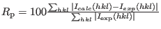
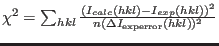

Next: Formalism I - Resonant Up: mcdiff - calculate and Previous: How to generate and Contents Index
For the fit of experimental intensities it is often desirable to save computation time by calculating the intensity only for a specified set of reflections and compare it to experimental data. Such list should have the following format
#{h k l }
0.500 0.500 0.500
0.500 0.500 1.500
0.500 0.500 2.500
Lets assume such a list is stored as file hkllist.dat. Then mcdiff can be started as: mcdiff hkllist.dat. The output file will then contain the azimuth dependence of the magnetic intensity.
Alternatively, experimental intensities can be entered in the list, for example as
#{h k l Iexp err}
0.500 0.500 0.500 115 4
0.500 0.500 1.500 84 3
0.500 0.500 2.500 50 1
0.500 0.500 3.500 29 1
0.500 0.500 4.500 22 2
0.500 0.500 5.500 15 1
0.500 0.500 6.500 12 1
#
1.500 1.500 0.500 -1
1.500 -1.50 0.500 -1
-1.50 1.500 0.500 77 8
1.500 1.500 1.500 65 7
1.500 1.500 2.500 59 5
1.500 1.500 3.500 51 5
In this case the calculated neutron intensities are compared to
the experimental intensities and the Rp value
. and

is calculated (here  denotes the number of experimental reflections).
denotes the number of experimental reflections).
Note, a negative experimental intensity in this list means, that the intensity of that reflection has to be added to the intensity of the next reflection in the list and the sum should be compared to an experimental intensity. In this way domains or overlapping reflections can be treated. The program will always calculate the intensity for each reflection seperately, if you wish to calculate the sum of intensities, which are compared to the experimental intensity, use program sum_mcdiff_out.